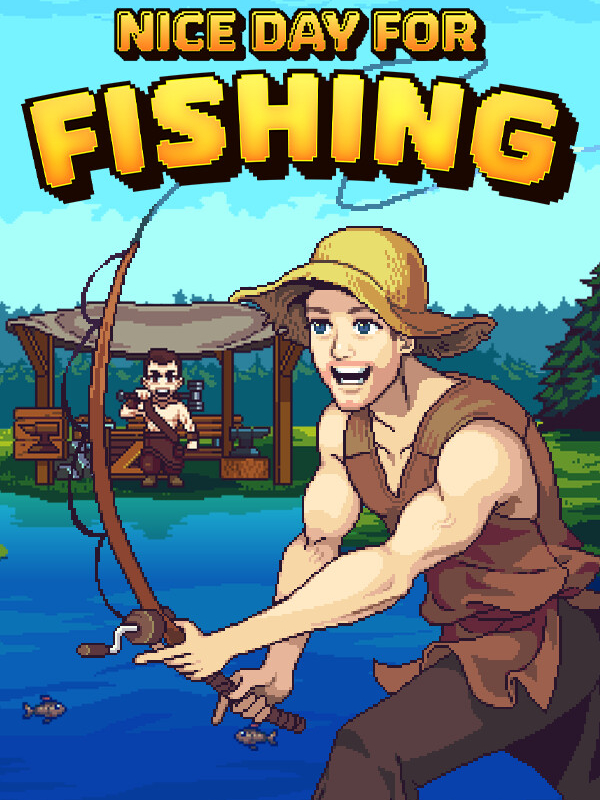

Nice Day for Fishing
Nice Day for Fishing
Details
|  | |
| Playtime | 8h 31m 0s |
| Last Activity | 2025-11-15 21:42:52 |
| Added | 2025-10-05 23:49:39 |
| Modified | 2025-10-05 23:49:58 |
| Completion Status | Played |
| Library | Steam |
| Source | Steam |
| Platform | PC (Windows) |
| Release Date | 2025-05-29 |
| Community Score | |
| Critic Score | |
| User Score | |
| Genre | Adventure Role-playing (RPG) |
| Developer | FusionPlay |
| Publisher | Team17 |
| Feature | Single Player |
| Links | Steam Official Website Twitch YouTube Playstation Nintendo |
| Tag | 2D Action RPG Action-Adventure Adventure Atmospheric Colorful Combat Comedy Crafting Creature Collector Fishing Funny Open World Pixel Graphics RPG Side Scroller Singleplayer Story Rich |
Description


An epic tale of fantasy, adventure and… fishing?
When the heroes of Azerim mysteriously vanish, an evil force threatens to take over the lands! Baelin the fisherman NPC must rise up to defend the town of Honeywood the only way he knows how! However, something's different... Baelin's no longer an NPC but... an Adventurer! Can you handle your new found responsibility?! Battle fish with precision timing and magic spells, upgrade your abilities, defeat evil and rebuild Honeywood.
Morning! Nice day for fishing ain’t it!


Engage in fearless fishing battles to fulfil quests, increase your strength and unlock spells to use against your aquatic adversaries. Equip the right bait for your catch, and time your attacks perfectly to ensure flawless victory. Be wary of the boss fish looming in the deep, who will truly test your skills.


Explore the enchanting lands of Azerim above land and beneath the waves. Adventure through Honeywood forest to the Azerim coast where you'll encounter new quests, people to save and new fish to catch. Navigate the pull of the underwater currents to move your hook into hard to reach caves and upgrade your fishing line to delve deeper into the abyss.


Every Adventurer deserves the ultimate tools for their quest. Although Baelin may be a humble fisherman, as an Adventurer his rod is his weapon, his boat is his steed and his hat is his armor, so make sure you've equipped the right one for the job! Effortlessly dredge hidden treasures from the deep with the magnet hook, or break through cavern walls with the powerful drill to unlock new pathways. Enhance your fishing rod to increase your strength and upgrade your lines to go further into the depths to target the formidable and challenging fish that swim in the shadows.


While on your adventures, you’ll find valuable resources to dredge from shipwrecks that have succumbed to the sea, which can be used to rebuild the destroyed village. Enlist help from the Woodcutter to bring Honeywood back to its former glory. Each building upgrade unlocks more equipment and quests from the merchants.


Prove yourself worthy to the mighty fishing God by offering completed collections from each region at his statue, and receive your blessings of upgraded skills.
Officially licensed by: Viva La Dirt League